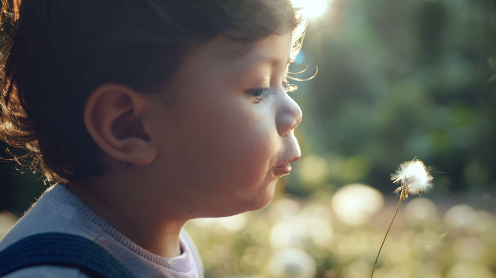

Nestlé China × Publicis Groupe
妈妈，你能感受到我的感受吗？
Creative Director • Brand Strategy • Experience Design • 2019
View Case StudyCategory: Brand Strategy / Integrated Campaign
Client: Nestlé China — SuperNan3 (超启能恩3) NAN H.A.
Agency: Publicis Groupe, Beijing
Role: Creative Director — Brand strategy, campaign big idea, experience center direction, brand film supervision
Duration: 2019 (6 months)
Team: Led creative concept, directed brand film, designed experience center
Methods: Consumer Research (Ipsos FGD, Kantar U&A), Concept Development, Production Direction
Tools: TVC Production, iQiyi/Tencent Distribution, Offline Experience Design
Awards: "Healthy China 2018 Annual Public Trust Brand"
A brand campaign that made Chinese mothers feel infant sensitivity — lifting market share from #9 to #7.
"81.74% of Chinese babies experience minor sensitivities — but only 5% of mothers rank it as their top concern. The gap became our strategy."
of Chinese babies have experienced or are experiencing "minor sensitivities"
Source: Babytree Research, 2018 (n=2,114)
H.A. hydrolyzed protein
Clinically proven
Prevents allergy
"Allergy is from heredity, not formula"
"It's normal — baby will outgrow it"
Only 5% rate it Top 1 concern
Mothers see hydrolyzed formula as medicine, not prevention. The link between allergy and infant formula remains poorly understood.
Babies scratch, cry, and can't sleep — but can't say why. Only 5% of mothers rate allergy as a top 1 concern.
No competing brand addresses "special issues" in communications. SuperNan3 ranked #9 — invisible between regular and prescription formulas.
Do You Feel What I Feel?
Stop explaining the technology. Start letting parents feel what their baby feels.
Shot entirely from baby's POV — baby's internal monologue: "Even though it's minor, my body feels it in a major way." Distributed on iQiyi and Tencent Video.
Immersive offline space where parents physically feel baby allergy symptoms — simulated skin irritation, distressed infant heartbeat, and blurred uncomfortable vision — turning abstract science into body memory.
Timed to June 1st Children's Day — cross-platform launch driving awareness at a high-emotion moment for parents.
As Creative Director at Publicis Groupe Beijing, I led the creative strategy that reframed a technical product — partially hydrolyzed infant formula — from clinical science into emotional experience. The insight: mothers couldn't feel what their babies felt. So we built a multi-sensory experience center where parents physically experienced allergy symptoms through touch, sound, and vision, supported by a brand film shot entirely from the baby's point of view. The idea became a 3-year brand platform, not just a campaign.
"The best brand communication doesn't tell consumers how good the product is — it makes them feel how real the problem is."

Stills from the brand film "Do You Feel What I Feel"
Brand Film — "Do You Feel What I Feel" (感受篇)
Ipsos FGD + Kantar U&A revealed: moms dismiss symptoms as "normal growing up."
Developed 4 creative directions; winning concept: baby POV emotional narrative.
Designed multi-sensory offline space simulating infant allergy through touch, sound, and vision.
Brand film + experience center + Children's Day campaign across iQiyi and Tencent Video.
"Design is not about delivering information. It's about creating sensation."
"Feel" beats "Understand." Once parents physically experienced allergy discomfort, they didn't need convincing — they understood.
3-year platform, not 1-time campaign. "Do You Feel What I Feel" became a scalable narrative framework, not just a tagline.
Offline experience as brand asset. The sensory center was more persuasive than any TVC. Bodies remember what minds forget.
This project was the turning point in my career — from advertising creative director to interaction designer. The most powerful way to change behavior isn't a 30-second ad. It's letting people feel it with their own body.
This same principle later drove JOYCUBE (spatial brand experience) and Drink Like David (physical computing ritual).